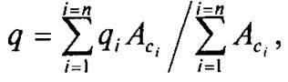
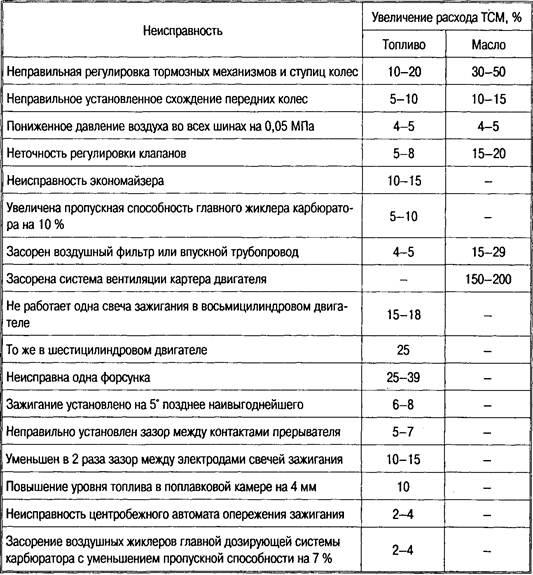
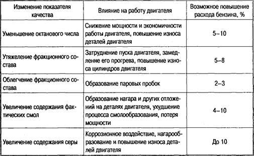
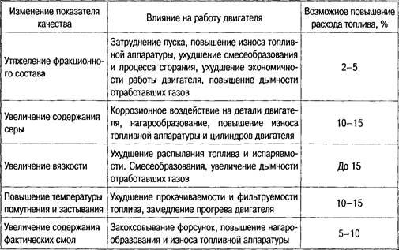
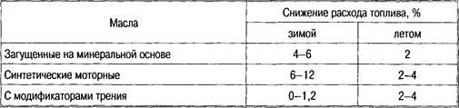

Тема 13
Нормы расхода ГСМ и
специальных жидкостей
Управление
расходом TCM
Расходы на
топливно-смазочные материалы (ТСМ) на автомобильном транспорте достигают 30 %
общих затрат на единицу транспортной работы.
Опыт показывает, что
фактический расход ТСМ может быть снижен на 20 % и более, в результате чего
себестоимость перевозок грузов снижается на 3—4 %.
На расход ТСМ
значительное влияние оказывают соответствие качества ТСМ и предъявляемым к ним
требований, конструкция автомобиля и структура парка подвижного состава, т. е.
наличие малотоннажных автомобилей для внутригородских перевозок и автопоездов
максимальной грузоподъемности для междугородных перевозок.
Основные
составляющие расхода ТСМ
Экономный расход ТСМ
предполагает, прежде всего, точный и оперативный учет. В связи с этим на
автотранспортных предприятиях (АТП) осуществляется бухгалтерский и оперативный
учет ТСМ. Оперативный учет ведут отделы (группы) топливно-энергетических
ресурсов, которые разрабатывают планы организационно-технических мероприятий по
экономии ТСМ, проводят систематический анализ расхода топлива на предприятии
каждым водителем в отдельности.
Расход топлива каждым
водителем фиксируется в карточке учета расхода топлива и в лицевых счетах
водителей. При этом в учетной карточке за каждый день на основании путевого
листа указывается норма расхода топлива и фактический расход. Путевой лист
является первичным отчетным документом водителя, в котором фиксируется
пройденный автомобилем путь, число поездок, выполненная транспортная работа,
количество залитого в бак топлива или выданных на него талонов. Каждый путевой
лист имеет номер и заверяется печатью.
Учет топлива возможен
только при правильных показаниях счетчиков пройденного пути, поэтому
запрещается выпуск в рейс автомобилей с неисправными или неопломбированными
спидометрами.
На автотранспортном
предприятии проводятся декадный, месячный, квартальный и годовой анализ итогов
работы по использованию автомобильного топлива. За перерасход ГСМ сверх нормы с
виновных удерживается полная стоимость перерасходованного топлива, за экономию
выплачивается 95 % его стоимости.
Планирование
и нормирование расхода ТСМ
Существует два вида
нормирования расхода топлива: линейные (индивидуальные) и удельные (групповые).
Линейное нормирование
заключается в том, что для грузовых автомобилей расход топлива поставлен в
прямую зависимость от выполненной работы в тонно-километрах и указывается в
литрах на 100 т • км или на 100 км пробега автомобиля, т. е. на транспортную
работу и на пробег. Такое нормирование отражает фактический расход топлива,
способствует лучшему использованию грузоподъемности автомобилей и ставит в
более выгодные условия водителей тех автомобилей, у которых меньше пробег без
грузов и эффективнее используется грузоподъемность автомобиля.
Норма расхода топлива на
каждые 100 т*км транспортной работы для карбюраторных автомобилей — 2 л, для
дизельных — 1,3 л, для газобаллонных на сжиженном газе — 2,5 л.
Норма расхода топлива на
100 км пробега устанавливается в зависимости от модели автомобиля. Например, для
автомобиля ГАЗ-53А она равна 25 л, для автомобиля ЗИЛ-130 — 31 л, для
автомобиля MA3-5335 — 23 л.
Линейный расход топлива
рассчитывается по формуле
QH =K1(L/100)(1 ± Д) + К2(Р/100)
+ К3т,
где К1 — норма
расхода топлива на 100 км пробега, л;
L — пробег автомобиля, км;
Д — поправочный коэффициент (надбавки
к нормам);
К2 — норма расхода
топлива на 100 т*км транспортной работы и на дополнительную массу прицепа, л;
Р — транспортная работа, т*км;
К3 — норма расхода
топлива на одну ездку с грузом, л;
т — число ездок с грузом.
Применяют формулы для
частных случаев, например:
для самосвалов
QH =K1(L/100)(1
± Д) + К3т,
для автобусов, легковых и
грузовых автомобилей с почасовой оплатой
QH =K1(L/100)(1
± Д).
При работе за городом на
дорогах с современным покрытием нормы снижаются на 15 %.
Нормы на расход топлива повышаются:
— зимой в южных районах до 10 %;
— в северных районах до 15 %;
— на Крайнем Севере до 20 %;
— при работе на дорогах со сложным
планом до 10 %;
— в городских условиях от 5 до 20 %;
— для автомобилей, работающих с
частыми остановками, до 10 %;
— при работе в карьерах, на поле и
тяжелых дорожных условиях до 20 %;
— для новых автомобилей и после
капитального ремонта на первой тысяче километров пробега на 5 %;
— на учебную езду на 20 %.
Групповое нормирование
разрабатывается с учетом структуры парка, объема грузооборота, общего пробега,
линейных норм, коэффициентов использования пробега, грузоподъемности
автомобилей и фактического расхода топлива за отчетный год.
Групповые нормы
определяют затраты топлива на выполнение единицы работы и указываются в граммах
на тонно-километры, служат показателем эффективности использования
автотранспорта.
Групповая норма — это
максимальное количество топлива, которое допускается расходовать при выполнении
единицы транспортной работы. На основании групповых норм определяется фонд на
топливо.
Групповые нормы
устанавливают для автотранспортных предприятий вышестоящие организации. Внутри
АТП удельные нормы распределяются по автоколоннам, участкам, цехам.

где — грузоподъемность автомобиля
i-ой марки; АCi — списочное число автомобилей на первое число
первого месяца года данной марки; i — порядковый номер марки автомобиля в перечне
структуры грузового парка; n — число марок.
Средневзвешенная
грузоподъемность автопарка q рассчитывается следующим образом:
Коэффициент полезной
работы автотранспорта z определяется выражением
z = βγ = W/qS,
где β — коэффициент использования
пробега;
γ — коэффициент использования
грузоподъемности;
W — грузооборот в отчетном году;
S — общий пробег автомобилей.
Групповая норма расхода
топлива без надбавок определяется по формуле
H*ω=10ρHsz/qz,
где ρ — плотность топлива;
Hsz —
средневзвешенная линейная норма на 100 км пробега автомобиля.
Групповая норма расхода
топлива с учетом надбавки рассчитывается по формуле
Hω=H*ω(1+Д/100),
где Д — надбавка к групповым нормам,
%.
Нормы расхода масел и
смазок устанавливаются на каждые 100 л общего расхода топлива, рассчитанного по
линейным нормам. Так, на каждые 100 л топлива по норме полагается: моторного
масла — 2,4 л для автомобилей с карбюраторными двигателями, 3,2 л для дизелей;
трансмиссионного масла — 0,3 для карбюраторных двигателей и 0,4 для дизелей;
пластичных смазок — 0,2 для карбюраторных двигателей и 0,3 для дизелей.
При этом нормы снижаются
для автомобилей, находящихся в эксплуатации менее 3 лет, до 50 % и
увеличиваются до 20 % для автомобилей, находящихся в эксплуатации более 8 лет.
Контрольные вопросы
1. Какие существуют виды нормирования
расхода топлива?
2. В чем заключается линейное
нормирование?
3. В чем заключается удельное
нормирование?
4. Как устанавливаются нормы расхода
масел и смазочных материалов?
Экономия
ТСМ при эксплуатации автомобильной техники
Для экономного
использования ТСМ важное значение имеет их качество. При несоответствии
качества предъявляемым требованиям к ГСМ неизбежно увеличивается их расход и
ухудшаются показатели работы автомобилей в целом.
Так как на расход ТСМ
оказывает влияние структура подвижного состава, то в парках автопредприятий
должны быть малотоннажные автомобили для внутригородских перевозок и
большегрузные автопоезда для междугородних.
Большое влияние на
экономию ТСМ оказывает трансмиссия, аэродинамические качества автомобиля и
такие современные конструктивные решения, как наличие бортовых компьютеров,
большое число передач, использование впрыска топлива в бензиновых двигателях,
снижение массы автомобиля.
Факторы, влияющие на
расход ТСМ:
— правильная организация транспортного
процесса;
— соответствие применяемых сортов ТСМ
конструктивным особенностям автомобиля и условиям эксплуатации;
— техническое состояние и регулировка
узлов и механизмов;
— мастерство водителя;
— экономия топлива при
транспортировке и хранении.
Организация транспортного
процесса
От правильной организации
перевозок зависит эффективное использование грузоподъемности и пробега
автомобилей.
Степень использования
грузоподъемности автомобиля определяется отношением массы перевозимого груза к
номинальной грузоподъемности, т. е. коэффициентом использования
грузоподъемности у. С увеличением у уменьшается удельный расход топлива на
единицу транспортной работы и при стопроцентном использовании грузоподъемности,
когда γ=1, удельный расход топлива будет минимальным. Увеличение γ на 1 %
снижает удельный расход топлива на 1,6 %.
Расход топлива на единицу
транспортной работы может быть сокращен при увеличении коэффициента
использования пробега р.
Р = 5Г/5,
где ST — пробег
автомобиля с грузом;
S — общий пробег автомобиля.
Увеличение β на 1 %
снижает удельный расход топлива на
1,3 %. Использование
прицепов снижает удельный расход топлива на 25—30 %.
Соответствие применяемых
сортов ТСМ конструктивным особенностям автомобиля и условиям эксплуатации
Использование топлива и
масла, не соответствующих конструктивным особенностям двигателя, неизбежно
вызывает его перерасход. Это в первую очередь относится к таким показателям
качества топлива, как октановое число и фракционный состав для бензинов,
цетановое число и фракционный состав для дизельных топлив. Так работа на
бензине с тяжелым фракционным составом может дать увеличение расхода топлива до
70 % и повысить износ двигателя на 30—40 %.
Применение
несоответствующих сортов масел приводит к перерасходу не только масла, но и
топлива. Моторное масло с высокой вязкостью приводит к перерасходу топлива, с
низкой вязкостью — к перерасходу самого масла.
Пластичная смазка с
недостаточной температурой каплепадения будет вытекать из узлов трения.
Отрицательные результаты
дает использование топлива и масла, не соответствующих климатическим условиям
эксплуатации автомобиля. Так, например, при работе зимой грузового автомобиля,
заправленного летними сортами ТСМ, расход бензина при движении за городом по
дороге с твердым покрытием оказывается выше на 3—6 % и при движении в городских
условиях — на 8—12 % по сравнению с автомобилем, заправленного ТСМ,
соответствующими сезону.
Техническое состояние и
качество регулирования узлов и агрегатов автомобиля
Износ деталей влияет на
расход топлива в меньшей степени, чем неверная регулировка. Так, износ
цилиндропоршневой группы до состояния, когда из маслоналивной горловины
начинают активно выходить отработавшие газы, приводит к росту расхода топлива
на 10—12 %, а нарушение регулировок — на 20—25 %. Больше всего увеличивают
расход топлива неправильное регулирование тормозных механизмов и ступиц колес,
карбюратора, неправильное схождение колес, неисправности системы зажигания.
Увеличение скорости
прорыва газа в картерное пространство с 15—25 л/мин (новый двигатель) до 60—100
л/мин (изношенный двигатель) увеличивает расход масла в 2—2,5 раза. В табл.1
показано влияние неисправностей некоторых деталей и узлов на расход топлива и
масла.
Таблица 1. Влияние
неисправностей деталей и узлов автомобиля на расход топлива и масла

Мастерство
водителя
Мастерство водителя
автомобиля заключается:
— в правильной оценке
дорожных условий;
— максимальном
использовании экономических режимов работы двигателя;
— в использовании
движения накатом;
— в своевременном
переключении передач;
— в предпочтении езды на
высшей передаче.
В зависимости от техники
вождения расход топлива может изменяться до 20—25 %. Частое торможение
увеличивает расход топлива, так как каждый раз приходится форсировать двигатель
для очередного разгона, поэтому предпочтителен режим установившегося движения.
Также необходимо поддерживать нормальный тепловой режим двигателя, так как и
перегрев, и переохлаждение двигателя приводят к перерасходу топлива.
Высокие скорости
движения, безусловно, вызывают повышенный расход топлива, так как при этом
приходится преодолевать сопротивление воздуха, а оно возрастает пропорционально
скорости движения. Уже при скорости движения грузового автомобиля 70 км/ч на
преодоление сопротивления воздуха затрачивается сила тяги на ведущих колесах в
десять раз больше, чем при скорости 30 км/ч, а чтобы увеличить силу тяги, надо дополнительно
получить тепловую энергию и потратить дополнительное топливо.
Пустой багажник на крыше
легкового автомобиля увеличивает расход топлива на 3—4 %. Еще больше расход
увеличивается при езде с открытыми окнами.
Экономия топлива при
транспортировке и хранении
Топливо легко испаряется
и обладает большой текучестью. Летом, например, через открытую пробку бочки за
час может испариться до 1 кг бензина, а через открытую горловину резервуара за
сутки может быть потеряно более 100 кг топлива.
Бензин может проникать
через самые незначительные неплотности швов, через которые вода и керосин не
проходят, образуя так называемое «потение», причем этого можно не увидеть, так
как бензин тут же испаряется. Через 1 м потеющего сварного шва в сутки теряется
до 2 л бензина.
Подтекание ГСМ в виде
капель со скоростью одна капля в секунду за сутки составит 4,5 л. При испарении
теряются наиболее ценные фракции нефти.
При хранении и перевозке
ТСМ тара должна быть чистой. Не допускается применять емкости, ранее
использованные для хранения низшего сорта нефтепродуктов без промывки.
При наполнении цистерны
или резервуара сливной шланг должен быть опущен ниже поверхности уровня топлива
для уменьшения контакта топлива с воздухом и испарения. При хранении бензина в
бочках не следует их заполнять под пробку, иначе бензин при повышении
температуры будет просачиваться по резьбе.
Бензин хранится при
соблюдении всех правил до 5 лет, дизельное топливо — до 6, масла всех видов —
до 5 лет, пластичные смазки — от 1,5 до 3 лет.
Потери топлива в
резервуарах, заполненных наполовину, в 5—6 раз больше, чем в полных, при этом в
полузаполненных резервуарах интенсивнее идет смолообразование. Незаглубленные
резервуары окрашиваются в светлые тона для уменьшения поглощения ими солнечной
энергии. Смолообразование с увеличением температуры на 10 °С увеличивается в
2,4—2,8 раза, поэтому резервуары необходимо заглублять под землю.
При сливе и заливе
резервуара на каждую тонну бензина теряется 5—7 кг.
Для обеспечения чистоты
топлива необходимо систематически удалять отстой из резервуара и раз в год его
чистить.
Использование для ТСМ
ведер, леек, ручных солидолонагнетателей увеличивает потери в 12—20 раз.
Потери нефтепродуктов
нормированны.
Экономия
моторных масел
На расход масла в
большинстве случаев влияют те же причины, что и на расход топлива. Не случайно
нормы расхода моторного масла поставлены в прямую зависимость с нормами расхода
топлива. Однако здесь есть и свои особенности. Низкая вязкость моторного масла
приведет к увеличению его расхода, так как оно в большом количестве будет
попадать в камеру сгорания и вытекать через неплотности картера.
На расход масла большое
влияние оказывает и износ поршневых колец, поршней и цилиндров двигателя,
причем расход по этой причине может возрасти вдвое. Увеличивается расход масла
и при неисправной системе вентиляции картера, при перегреве и переохлаждении
двигателя. Особенно большой расход масла возникает при неисправных уплотнениях
двигателя.
Контрольные
вопросы
1. Какие факторы влияют
на расход ТСМ?
2. Как влияет на расход
ТСМ организация транспортного потока?
3. Как влияет на расход
ТСМ техническое состояние автомобиля и качество регулировки?
4. Как влияет на расход
ТСМ мастерство водителя?
5. Что влияет на расход
моторных масел?
Влияние
качества топлив и масел на их расход
Качество топлива и масла
оказывает взаимное влияние на их расход. Так, при тяжелом фракционном составе
топлива оно проникает в больших количествах в картер и преждевременно приводит
в негодность масло.
Применение же
несоответствующих трансмиссионных и моторных масел вызывает увеличение расхода
не только самих масел, но и топлива.
Установлено, что
использование ТСМ необходимого качества позволяет увеличить моторесурс
агрегатов автомобиля на 10—15 % и снизить затраты на техническое обслуживание
автомобиля на 15—20 %. Влияние отдельных показателей качества топлив на их
расход показан в табл. 2 и 3, а в табл. 4 показано влияние качества моторного
масла на расход топлива.
Таблица 2. Влияние
качества бензина на его расход

Таблица 3. Влияние
качества дизельного топлива на его расход

Таблица 4. Влияние масла
улучшенного качества на расход топлива

Пластичные смазки,
имеющие недостаточные пределы прочности, вязкость и низкую температуру
каплепадения, расходуются в больших количествах, так как они легко плавятся и
вытекают из узлов трения. Масла или смазки, не обладающие необходимыми
свойствами, быстрее становятся непригодными для дальнейшей эксплуатации, и их
чаще приходится заменять свежими.
Организация
контроля качества ТСМ
При поступлении бензина
можно определить его качество по данным сопровождающего топливо паспорта,
который выдается снабжающей организацией. В паспорте указываются значения
физико-химических показателей бензина, которые можно сравнить с требованиями
ГОСТов.
Чтобы убедиться в данных
паспорта или определить качество бензина, не имеющего паспорт, необходим
сложный лабораторный анализ. В этом случае надо правильно отобрать пробу
бензина в соответствии с ГОСТ 2517—85 (2 л бензина или меньше, если анализ
проводится не по всем показателям).
Проба бензина,
хранящегося в горизонтальном цилиндрическом резервуаре диаметром более 250 см,
должна состоять из проб, отобранных с трех уровней: верхнего — 200 мм ниже
поверхности бензина; среднего — с середины высоты столба бензина; нижнего — на
250 мм выше нижней внутренней образующей резервуара. Количество отобранного
бензина с этих уровней должно быть в соотношении 1:6:1.
Качество дизельного
топлива контролируется аналогично бензину. При этом в зимнее время года особое
внимание следует обращать на вязкостно-температурные показатели. Дизельное
топливо обладает хорошей химической и физической стабильностью, поэтому
храниться оно может дольше, чем бензин, но попадание в дизельное топливо воды и
механических примесей более опасно. Присутствие воды можно обнаружить по его
помутнению вследствие выделения кристаллов льда, которое наблюдается при его
охлаждении до температуры ниже —5 °С.
Установить марку
дизельного топлива по внешнему виду практически невозможно, поэтому на таре
должны быть бирки или надписи.
Качество свежего масла
также контролируется, прежде всего, по данным паспорта. Особое внимание следует
обращать на состояние тары, так как негерметичная тара может стать причиной
попадания в масло воды или абразива.
Тара для масла должна
иметь этикетку или ярлык, так как установить качество масла по цвету, запаху,
густоте и другим внешним признакам практически невозможно.
В настоящее время не
существует методов определения качества масла, находящегося в эксплуатации.
Поэтому критерием для замены масла является срок его службы, предел которого
устанавливается проведением научно-исследовательских работ с учетом опыта эксплуатации.
Чтобы определить качество
пластичных смазок, следует использовать такие признаки, как цвет,
влагостойкость, растворимость в воде и жировое пятно.
Для графитной смазки
признаком является цвет (от темно-коричневого до черного). Цвет смазки ПВК от темно-коричневого
до светло-коричневого, и должна быть прозрачность в тонком слое. Качество
остальных смазок по цвету определить нельзя.
При растирании смазок
пальцами с небольшим количеством воды солидолы и смазка ПВК (влагостойкие
смазки) не мылятся и не смываются.
Жировое пятно на
фильтровальной бумаге от комочка смазки может указать вид смазки, для этого
бумагу подогревают до полного растворения смазки. Смазка ПВК полностью
расплавляется, оставляя равномерное желтое пятно. Графитная смазка образует
темное пятно с четко видимыми включениями графита. Солидолы оставляют пятно с
мягким остатком в центре того же цвета, что и пятно. Смазка ЯНЗ-2 образует
пятно меньшего диаметра и частично остается на бумаге в нерасплавленном виде.
Пластичная смазка должна
представлять собой однородную массу без наличия комков, посторонних включений,
примесей или выделяющегося масла.
Для проверки наличия
абразивных примесей смазку растирают между двумя стеклами или расплавляют на
фильтровальной бумаге.
Повторное
использование отработавших масел
Повторное использование
или регенерация отработавших масел заключается в удалении из них механических
примесей, топливных фракций, воды, органических кислот, нейтральных и кислых
смол, асфальтенов и других образовавшихся в них продуктов, а также в добавлении
присадок. Считается, что регенерированное масло не уступает свежему маслу более
низкой себестоимости.
На АТП отработашие масла
делятся на две группы: первая — масла моторные отработавшие (ММО); вторая —
смеси отработавших нефтепродуктов (СОН).
Отработавшие масла первой
группы представляют собой ценный исходный продукт, к которому предъявляются
определенные требования по вязкости, массовой доли топлива, содержанию воды и
механических примесей. Поэтому они сдаются по цене в несколько раз превышающей
цену масел второй группы.
Контрольные вопросы
1. Как влияет качество
ТСМ на расход?
2. Как можно
проконтролировать качество бензина?
3. Как можно
проконтролировать качество масла?
4. Как можно
проконтролировать качество пластичных смазок?